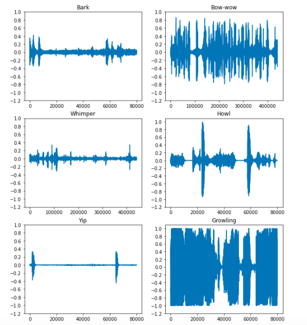
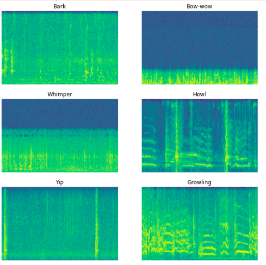

This project was developed within the scope of the course "Introduction to Internet of
Things" by Dr. Ing. Mohammed Al-Olofi. This documentation describes all processes carried out during the project development time as
well as the tools and technologies and references used in the process.
Idea
This project is about the implementation of a Smart Dog Monitor. There are situations in
which a dog owner has to leave his dog alone and it suffers from separation anxiety or other
conspicuous behavior. To tackle this problem this project was developed to monitor the behavior of
the dog while he is alone at home. The Smart Dog Monitor is designed to detect the dog's
emotional state based on the sounds it makes (barking, growling, yelping, etc.) and play
calming music accordingly. If this calming music does not work, the dog owner will be
notified by a push notification on his smartphone. The detection of the emotional state is
done by a machine learning model that works on the concept of sound classification. The Raspberry Pi was used
as the main device here along with a usb microphone and a bluetooth speaker.
Software Architecture and Workflow
Here is an overview of the Software architecture and Worflow of the project:
1. Here the noises of the dog are constantly listened to and stored via a microphone, which is connected to the Raspberry Pi. The sound recording is listened to and processed in the Raspberry Pi using Tensorflow, which is served on a Flask server.
2. When an anxious behavior of the dog is classified, an API call is made and calming music for the dog is played through the Bluetooth speakers.
Steps 1 and 2 are repeated again if the dog is still making the sounds.
3. If the dog does not calm down, a push notification is sent to the dog owner's smartphone via Firebase Cloud Messaging, informing them that the dog is showing unusual behavior.
Tools and Resources
The various tools that were used for the project are listed below:
Raspberry Pi 4 B
The Raspberry Pi 4 was used as the main device here. One of the major reason to choose a Raspberry Pi device was that we needed to use Tensorflow in our project for deep learning which is not widely available for micro-controllers but has recently been made compatible with certain models with high performance capabilities.
Raspberry Pi 4 Model B
To be able to use it for our purpose, an OS had to be installed. Here, the decision fell on
Debian, since this operating system is compatible with most packages, has a certain
stability and requires little maintenance.
Specifications of the product are as follows:
The Anker Soundcore 2 was used here to play the soothing music. A connection to the device was established via Bluetooth. In order for the speaker to work, it is necessary to perform a few configurations here.
PulseAudio
PulseAudio is a network-capable sound server program distributed via the freedesktop.org project. It runs mainly on Linux, various BSD distributions such as FreeBSD and OpenBSD, macOS, as well as Illumos distributions and the Solaris operating system. ( PulseAudio Wiki )
Bluetooth connection
To establish a connection to the device the following steps had to be performed:
bluetoothctl
power on
agent on
default-agent
Then we found out the MAC address and could connect the device.
pair xx:xx:xx:xx:xx:xx
trust xx:xx:xx:xx:xx:xx
connect xx:xx:xx:xx:xx
A2DP support
After the connection to the device was established, the A2DP Bluetooth profile had to be set up to realize the sound output.
For this the Bluetooth sound card had to be listed:
pacmd list-cards
The Bluetooth sound card was on index #1 and now we had to enable A2DP:
This section includes detailed information about the different technologies used in the project starting form python to tensorflow, which was used for developing the deep learning model to classify the various sounds that a dog makes.
Python
Python is a programming language that lets you work more quickly and integrate your systems more effectively. [1] We decided to use Python for our project since there were various technologies to be used in the project. Since, it is not feasible to use different programming languages for one project that need to be interpolated with different techniques.
Tensorflow
Tensorflow is one of the famous deep learning libraries available in the market to perform tasks like linear regression, image classification, etc.
Firebase Cloud Messaging
Firebase Cloud Messaging is a feature available from Firebase which enables us to send push notifications across various devices once a device has been registered through a service worker. Some examples of push notifications are the ones that you get from various apps like facebook(getting a new friend request), amazon(order on the way, order dispatched), etc.
Push Notification Example
Demo 1
Here is an overview of Demo 1.
Setting up Raspberry
Raspberry Pi 4 with UI was setup for the project. Vnc viewer was used to access the UI.
VNC Viewer
Microphone Setup
For our project we required a microphone to record the sound from a dog. The first attempt was made with a sound module.
Upon inspecting it was found out that there isn't a possibility of saving the audio recorded from the microphone and it can only play audio on the go. Since, our use case required us to save the audio file for sending it to the api to analyse the sound, we decided to look for some other device.
Next, we tried to setup the Bluetooth Device mentioned above. The function was successful but considering our project it wouldn't have been optimal to choose the device because we required to record sound and also play music simultaneously. The issue was that there needs to made a protocol switch on the device for playing and recording; HSP and A2DP protocols.
Audio Output
We were able to connect our bluetooth sound speaker to our Raspberry Pi. Following is a video showing the audio output from the Raspberry to the bluetooth speaker.
Data collection for Tensorflow
For generating a model to classify audio we required to collect different sounds which correspond to the sounds that dogs make. We used the dataset by research.google.com On every category page, we grabbed the json response which contained the audio files with timestamps. For example, https://storage.googleapis.com/audioset_website_data/youtube_corpus/v1/balanced_train/bark/1.js gives a json response. We wrote a small javascript to take that response and give a list directly copeable into an excel sheet.
Test Api Structure
To have an idea of how the Dog sound classifier would analyse and respond to an audio file, a test api was created using https://testapi.io/ Responses:
There were a bunch of issues faced by the time of demo 1. They are listed below:
Saving the audio to the Raspberry Pi was not possible because it doesn't allow to save input and only can play directly into the speaker.
Audio recording to Raspberry wasn't possible
Using bluetooth device for recording and playing music wasn't successful due to A2DP and HSP protocol switching issue (Solved by using a separate usb mic for recording)
Mic + Speaker Function
The recording function and calm music playback function was separated out by including a USB Microphone. The recording then works on the usb microphone and music playback on the bluetooth speaker. The video below shows the functioning(At first, the laptop on the left plays a dog barking sound and then the bluetooth speaker plays it backs through the recording made by the Raspberry Pi):
Full Use Case
The use case demontrated in demo 2 is summarized below:
Dog sounds are played from the laptop on the left hand side
Sound is recorded through the usb microphone and saved onto the Raspberry Pi (shown in the Python Code)
After the successful recording an API call to the sample api was made(later it would me made to a flask server running tensorflow on it)
After the APi call was made, a music file containing calm music is played on the bluetooth speaker through the Raspberry Pi
At the end, a push notification is sent onto the mobile device using FCM
Full use case view
Python script to showcase features
A python script was written to showcase all the features of the project. Below is the script:
The process can be understood as:
Libraries like pygame, pyaudio, requests, pyfcm, etc. are loaded which are helpful for the different functions
The different functions are defined namely record(record audio using the usb microphone), call_api(make request to the flask api), play(stream calm music to the bluetooth speaker), send_push(send a push notification to mobile device)
record(): This method makes a 16 bit, single channel recording, using device index 2(usb microphone) using pyaudio library and saves it into test1.wav
call_api(): https://testapi.io/api/pulkit604/dog_sound_classify is the address that is called using the requests api
play(): pygame mixer library is initialised and loaded with calm_scrott.mp3 and is then played until it finishes
send_push(): Push service is declared with api key from the fcm project, registration token of the device is set and then the push notification is sent with the details set
The script runs once and executes all the 4 functions in order
Website for Push Notifications
One of the features in our project was to notify the user when the music isn't able to calm down the sad dog. We had two options to choose from: Sms and push notifications We chose Push Notifications since in the modern world, people tend to be more reactive towards push notifications due to the ease. We built a basic Vue Website Project
Github Project Link and setup Firebase Cloud Messaging to send push notifications to devices easily from a python script.
Data collection update
The files downloaded in demo 1 were audios from complete youtube videos(3-4 minutes, for example). We required to trim the audio files and also generate an excel file with the remaining files since some of the youtube videos were already deleted or private. Below is the script:
Bitrate change
The model required audio files to be transformed into 16 bitrate sound files. Hence, the script was written which takes up all the files and converts them to a bitrate of 16.
Finally, we were able to find a model by tensorflow which was properly documented and was easy to possible to use our downloaded audio wav files with some modifications. Project Link
The model works by transforming the audio files into waveforms and then into spectrogram images. And when the model is trained from these images, it works on the concept of image classification by determining the similarity between the images of different categories/labels.
Below are some results of waveforms and spectrograms from the different categories that we had from the dog audio dataset.
Waveforms Spectrograms
Final Version
After a lot of experimentation and playing around with audio files of dogs barking, we were able to generate a model and deploy it on the Raspberry Pi itself and serve through a flask server. Below are the detailed infos.
Dataset Issues and final workaround
There came to be a lot of issues with the audio files like:
The majority of the sound files had terrible noises(people talking, shouting, musical instruments) in the background
The datasets had a poor categorization specially for the categories Yip and Whimper, which are the most imporant for us, since these two are the ones that correspond to the sound made by a sad dog relating to separation anxiety.
So, due to that fact, we only took the evaluation (for ex. Bark Evaluation videos )and evaluation videos (for ex., Bark Balanced Videos ) for each type(avg. 100 videos for each category) in order make a model that could at least have accuracy.
Here, is the collection copied into an excel file. After the collection was made, there still existed a problem of unwanted noise in the better videos too. In order to tackle this issue, we manually filtered out the audio files by listening to the audio files which weren't good for the training and deleted them one by one. We didn't go for some tool to filter it out because it wouldn't be easy to filter out dog sounds from noise as the tool could identify both as noise.
At the end, we were left with these files.
Final Model build and results
After we were done with filtering out the audio files and get the best set, we started with training the convolutional neural network(CNN). There were some issues when starting with training. The issues and their solutions are noted below:
Firstly, the audio files were complete audios from youtube videos(2-4 minutes), it was necessary to be crop them to the timestamps provided by the audioset. This script was used for that
After that, there was an issue with the audio files that it didn't support 32 bit audio files. For, that we wrote a script to convert the audio files into 16-bit wav audio files
The link to the script is here:
After, the bitrate conversion there came a new issue that the audio files had to be single channel. The script for that is attached here:
One more problem occured that while training the generated audio files were inconsistent in the dimensions of the spectrograms generated. These were ignored while training by writing simple ignore statement in for loops
At the end, since the number of audio files were limited, we created only two labels (yes - corresponding to a sad dog; no - not that case of a sad dog) instead of 6 categories because that anyways would be very less accurate due to the less number of files per category
Upon the successful training of the model, we were able to generate a model with not very good accuracy to distinguish between the two categorical sounds but upon a little experimentation we found out that the difference between the probability of `yes` and `no` was less than 0.21 in most cases. We later on used that observation as a deciding factor for the api
Model Deploy and Flask Server
After the model creation, we were to decide how we could use it in an Api, which could be similar to the test api and could be called using python requests library. After the model was built, the size came up to be around 20 Mb.
It was small enough to be used within the Raspberry Pi. So, next we tried with different versions of tensorflow that would be supported on the raspberry. After a lot of experimentation with different versions, we found version 2.4.0 to be compatible.
We created a flask server, which loads the generated model using keras load_model function and sent response similar to the test api created earlier after reading the file's contents. The script can be found here: Script Link
Continous Listening and Break Script
As part of the use case, we had planned to make a script that runs continuously, listens to the sounds and analyses and when at second attempt doesn't work sends out a push notification to the device and exits itself. This is the script.
Final Demo
Below is a final working of the functioning of the project. The process is as follows:
First of all, the flask server which used tensorflow loaded model is started
Next, we run the continous running script which starts by recording sound which comes from the laptop connected on the right,
Then, the api from flask server is called and since, the result is True,
Calm music is played onto the bluetooth speaker
Now, the script repeats the process of recording and calling api,
Then the result is again True so calm music is played as well a push notification is sent on the mobile device
After that the script stops running
Python Scripts
A bunch of python scripts were written and modified for various use cases ranging from downloading youtube videos to stripping audio files to a certain timestamp or for the deep learning model. All of the scrips are described and attached below:
Audioset Downloader
The below script reads an excel file with youtube video links and fetches audio files for that and saves to folders like Bark, Yip, etc.
The process can be understood as:
An excel file with rows in the form-> category_id audio_id start_timestamp end_timestamp is read using pandas.
The pafy library is then used to fetch the youtube video and get the audio track from it and saved in the format "./" + category + '/' + f'{audio_id}_start_{start_time}_end_{end_time}{bestaudio.extension}
ffmpy is used to convert the audio, if the file is not in wav format
Bitrate Converter
The below script takes audio files and converts them a bitrate of 16.
The process can be understood as:
Using Os library the files existing in the six folders(Bark, Yip, etc.) are listed
After that the files are read using soundfile library simultaneously
The files are then converted to PCM_16 which is a 16 bitrate format supported by the library and saved
Crop From Timestamp
The below script takes audio files and crops them to the start and endtimestamp mentioned in the file name like _fTONy_pqik_start_[start_timestamp]_end_[end_timestamp].wav
The process can be understood as:
Using Os library the files existing in the six folders(Bark, Yip, etc.) are listed
The names are split into link, start time, end time
The files are loaded using AudioSegment library
The cropped parts are taken like -> song[int(st)*1000:int(et)*1000], where st is the start time and et is the end time; 1000 is multiplied because milliseconds is the expected format
At the end, the cropped parts saved by export function
Set Mono Sound Channel
To work with the model it was required that the audio files be single channel audio files. The below script does that function.
The process can be understood as:
Using Os library the files existing in the six folders(Bark, Yip, etc.) are listed
The files are loaded using AudioSegment library
The channel is changed by `set_channels(1)`
At the end, the cropped parts saved by export function
Strip to 9 Seconds
There was a problem when generating the audio files to spectrogram images, that the images need to be of the same dimensions when training the model. Thus, the below script makes it possible to strip the audio files to the same duration of 9 seconds.
The process can be understood as:
Using Os library the files existing in the six folders(Bark, Yip, etc.) are listed
The cropped parts are taken like -> 0:9000]
At the end, the cropped parts saved by export function
Flask server
The below script is the flask server application used to analyse the recorded file and respond with true or false according to the logic if the difference between the probability of `yes` and `no` is less than 0.21
The process can be understood as:
Flask and tensorflow are the major libraries that are imported
A flask app is declared
Then a route is declared which would be accessible by a browser or using python's request library by http://127.0.0.0:5001/check
The CNN model is loaded using keras' load_model function
The recorded file test1.wav is tested with the model
From the prediction made by the model, the difference of probabilities of yes and no is calculated and true is return as a response if the difference is less than 0.21 else false otherwise
Final script for Raspberry Pi
The final script which records, checks the recording, plays music and sends push notifications is attached below.
The process can be understood as:
Libraries like pygame, pyaudio, requests, pyfcm, etc. are loaded which are helpful for the different functions
The different functions are defined namely record(record audio using the usb microphone), call_api(make request to the flask api), play(stream calm music to the bluetooth speaker), send_push(send a push notification to mobile device)
record(): This method makes a 16 bit, single channel recording, using device index 2(usb microphone) using pyaudio library and saves it into test1.wav
call_api(): http://127.0.0.1:5000/check is the address that is called using the requests api
play(): pygame mixer library is initialised and loaded with calm_scrott.mp3 and is then played until it finishes
send_push(): Push service is declared with api key from the fcm project, registration token of the device is set and then the push notification is sent with the details set
The script runs until exit() function is called or is stopped manually using ctrl+c, for example.
Starting step is recording of music file, the file is saved to test1.wav and is of 9 seconds
The flask api is called and if the result has 'True', the count of times(the no. of trues) is increased; calm music is played
After that process repeats itself until a 'True' response comes again
When a second time 'True' comes, calm music is played and a push notification is sent to the mobile device and also the script is stopped from executing further by using exit() function
Audio classifier Model
The below jupyter lab contains the modified code to load audio files and generate a classifier model to distinguish b/w dog related separation anxiety sound
Creating models can generally take around 1-2 years to get it to be very efficient and accurate. Below are some observations made from the experimentation and how the project can be extended and modified for future use.
Some issues that we faced during the working time of project:
The audio set had a weak labelling of the different sound categories.
The majority of the sound files had terrible noises(people talking, shouting, musical instruments) in the background.
The audio files didn't have similar pattern as in, some had 3-4 seconds silence and then a sound or the other way round.
There had to be done a manual filtering of the audio files by listening to them manually which takes a lot of time.
For the model to accept the audios there had to be done a lot of operations like bitrate change, stereo->mono channel change which makes the final files a lot different from the original sound.
There can be a lot of amendments possible with the project structure created using a better audio dataset.
If there can be added the factor of pitch from the audio files, it would be easier to have better accuracy since the sad sounds are generally told be of lower pitch than otherwise.
If there could be a dataset which consists of sounds without noise, it would be easier to get better results.
Since, there exists a wide variety of breeds of dogs, the project could be expanded by grouping some breeds of dogs that make similar sounds.
Since, there are similar situations with little kids and babies. If there exists or would exist a dataset of small children crying, the same project could be used just by altering the audio files and could be directly utilized.
References
Here is a list of links that were referred during the creation of the document and project.


{kind=link}